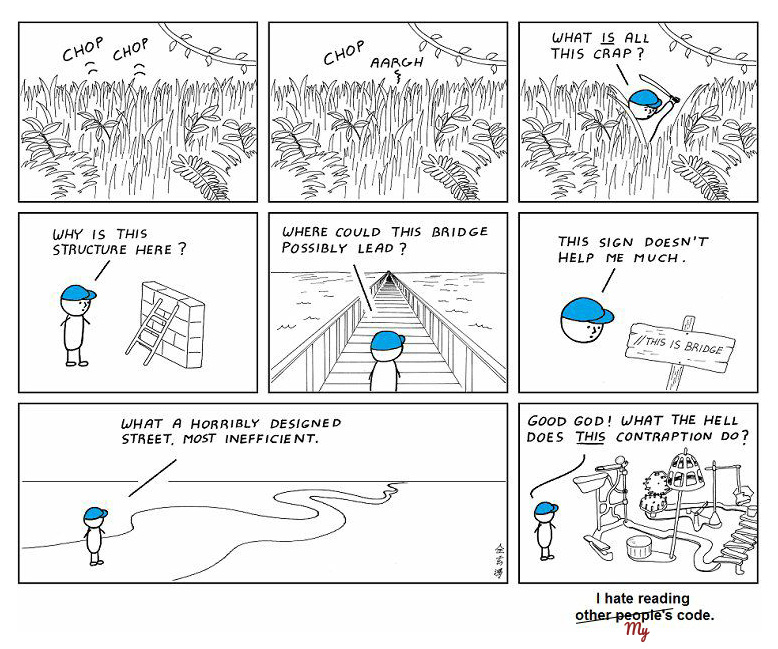

I started my Modul 2 studies by reading the Responsive Web Design book. It complemented and deepened the classroom materials, explained the whys and the hows of the different approaches. I made plans and notes of this new knowledge, and set to work on the second project armed with these.
Beginning
Learning Responsive Design
Plans of the new Project
Modul 2
As it was suggested that we start a new project, I thought about a good topic for a responsive site for Modul 2.
I took the ideas I collected in the fall and pondered, should I make a homepage for:
- a bookstore with an owl logo
- a webshop selling craft soaps
- a vintage style interior decorator
- a downtown coffee shop with a croissant logo
- a smart home real estate agency
Then I started thinking in different directions.
Handmade Shoes
or not
I won't go into much detail about the new project, as I didn't choose it in the end, but I'll mention that I wanted a modern, less childish topic. I also wanted something unique and special, so I could be excited about it.
I was planning to create a web presence for a boutique shoemaker workshop, where an award winning shoemaker created bespoke shoes for business people, actors, performers…
The shop handles repairs and reorders, maintains personal connection with its customers. Their main profile is hand-made, unique shoes; after personal measurement and consultation, customers can choose from a wide variety of materials, designs and patterns. But they can also bring their own ideas and request custom designs. The shoemaker develops her own designs and participates in shoemaker competitions with her creations.
I was motivated by two Swiss and a Hungarian similar shops: Huwyler, Redford, Attilacipő
I really like this idea and started to create sketches and a moodboard for the website. I bookmarked a few plans on behance, from which I planned to borrow colors, fonts and design elements.
In the meantime I got busy with learning the new subject – JavaScript, and I put this project away for a while.
Learning Javascript
Read and practice
I started to read the “Eloquent JavaScript” book, which I find really good. As the weeks passed and I began to understand and enjoy JavaScript, I started to work on some side projects. I further developed my homework “Coffee Machine”, practicing click events handling. You could unlock achievements and prizes during your “coffee break,” it was great fun! I also played around with the TODO list project.
All this gave me the confidence that I will be able to write/plug in the little scripts which are needed for the functioning website and finish on time. But the project will take a significant amount of time, and I do have to make a decision. Will I work on the new project, which I'm excited about, but did not yet take a proper shape?
Redesign
The old little fox
I felt that I got stuck in the planning phase with my new project and I'm going to run out of time. I decided at that point to briefly return to my previous webpage and try to refactor the static website in accordance with Modul 2 requirements. I felt that responsivity will not be a big challenge, and to practice the new material I rewrote the static website from Flex based to Grid base structure. Then created a few breakpoints/media queries where changes were necessary.
That was for practicing, I haven't decided yet: should I choose the safer looking, but having its own potential pitfalls, route — work on the existing static (almost responsive) website. Making significant design and functionality changes without breaking it. I was aware of the dangers of refactoring a spaghetti codebase, but eventually I chose this route.
In upgrading the original static website to responsive design I tried to preserve the original mood and appearance, but some modifications I deemed necessary. One of the main changes is that next to Montserrat and Pacifico I added a third typeface to the pages, which I use for navigation: Bebas Neue. This strong, pronounced font had to fit in with the rest of the design. It complements the black Montserrat subtitles, and the curves of Pacifico offset nicely the angular letters of Bebas Neue.
To balance out the changes and to preserve the original “meditative” mood, corners of buttons and boxes got a 4px border radius, and to keep the flat style uniform the images lost their gray borders.
The white color got added to the new appearance. Otherwise, I kept the original colors after some hesitation about choosing a main color or replacing the warm background with white.

code
sleep repeat
I wrote my own scripts for the dropdown menu, slider, accordion and tabs topics, then began to incorporate these into the otherwise ready website. The progress was slow, because I always found something to change or fix in my code or the website. It turned out that I need to somewhat restructure my html files. There was a moment when it looked impenetrable, but eventually I succeeded in refactoring my code without breaking it, and my javascript and jquery events came to live.
For the dropdown navigation, my plans in January were to change the appearance of the (fixed to the top) navigation bar as the content is scrolled. Since it's not important that it's present in the same size when the user just browses the content as when they just arrive to the page, I wanted to shrink and fade it when the user scrolls down. Or it could even completely disappear, and could be brought back with a small scroll up. I saw inspiring examples for this.
After all, I rejected these ideas, and implemented a side navigation bar for wide screens. On click, it brings out a full screen curtain navigation menu, with a slide animation. This side bar that brings out the navigation menu is always present, in desktop, tablet, and in mobile view, only its size changes, and in the smallest view it turns into a burger-menu.
But I didn't give up on the scroll event either. I implemented a feature where the fullscreen background image fades away as you scroll down, so that the content can be visible. The image comes back if you scroll back to the top.
For the slideshow element, I first implemented a very simple vanilla javascript slider with right-left stepping arrows and little circles for pagination. It has an unstoppable autoplay functionality, hopefully not annoying. I decided to keep this version until I can come up with a nicer slider one, just to move on with the requirements.
In my first accordion the challenge was that I only wanted to use it in the mobile view. On wider screens I had three cards next to each other, which I wanted to put under one another and make them openable in mobile view. Eventually I was able to make it work without weird effects even if you resize the page.
Since I learned how to do it, I decided to also have tabs. Fortunately, the site which has seven subpages had offered ample opportunity for that too.
I left the form validation for last. As I was quite uncertain about the design for user feedback. Then my motto was keep it simple because I hate deadlines.